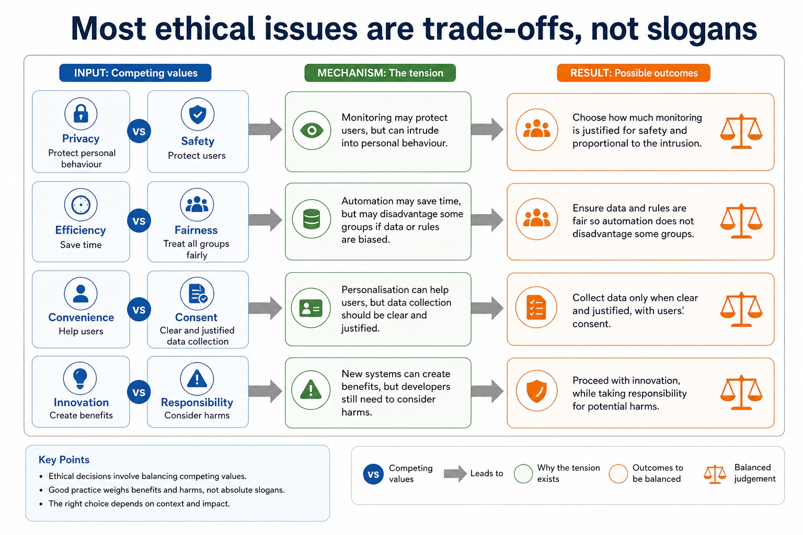
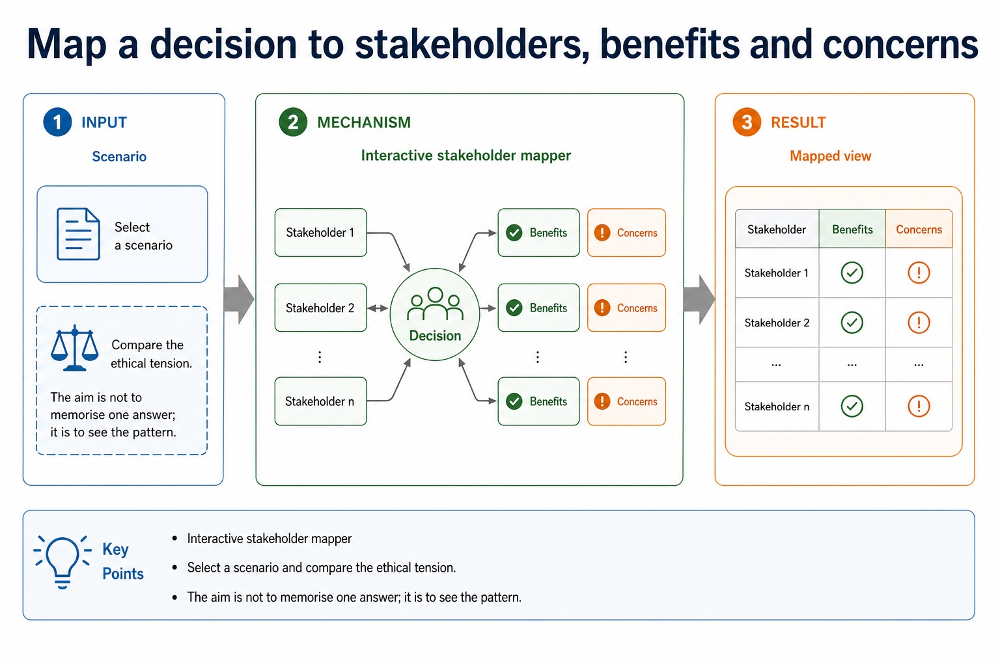

Professional ethics, professional bodies and ethical decisions
Professional ethics provides principles for deciding how a computing professional should act when technical choices can affect clients, users, colleagues or wider society. Its purpose is to protect the public interest, support competent and honest work, and make professionals accountable for foreseeable consequences rather than treating legal compliance or a manager's instruction as the whole decision.
Joining a professional ethical body is important because membership gives a practitioner an explicit code of conduct, current professional guidance, continuing professional development and a community through which standards and misconduct can be challenged. The British Computer Society (BCS) and the Institute of Electrical and Electronics Engineers (IEEE) are the two named syllabus examples. Their codes promote public interest, competence, integrity, privacy and accountability; a code guides judgement but does not replace law.
For a given situation, decide whether an action is ethical or unethical by identifying the decision, affected stakeholders, benefits, harms, rights and responsibilities. Then explain the impact of acting ethically and the impact of acting unethically. A defensible conclusion applies evidence, proportionality and safeguards; it is not a one-sided list or an unsupported personal opinion.
Worked example: Unsafe release pressure
A developer is told to hide failed safety tests so a medical system can launch on time. Concealing the evidence would be unethical because patients could be harmed and trust would be damaged. The developer acts ethically by documenting the risk, refusing to falsify the record and escalating through BCS/IEEE-style professional channels. This may delay release and cost money, but protects patients, supports accountability and allows the defect to be corrected.
Ethical answers start with stakeholders
Ethical answers start with stakeholders: source-grounded visual explanation.
Professional ethics, professional bodies and ethical decisions: apply and assess
Targeted practice
1. What is the purpose of professional ethics in computing?
Show answer
To guide competent, responsible and accountable decisions that protect clients, users and the public interest.
2. Why is joining a professional body such as BCS or IEEE important?
Show answer
It provides a code of conduct, professional guidance and development, accountability and a community that supports consistent standards.
3. In the unsafe-release situation, is concealing failed tests ethical or unethical?
Show answer
Unethical, because it hides foreseeable risk and can harm patients and public trust.
4. State one impact of acting ethically and one impact of acting unethically in that situation.
Show answer
Ethical escalation may delay release but protects patients and supports correction; concealment may meet the deadline but risks harm, liability and loss of trust.
Exam-style question
6 marks
A software engineer is asked to deploy a safety-critical update despite unresolved test failures. Determine whether complying silently would be ethical or unethical, explain two stakeholder impacts, and explain how membership of BCS or IEEE could support the engineer's response.
Show MS
Answer
Guidance
Marks
identifies silent deployment/concealment as unethical with a reason
Do not award a label such as 'unethical' without impact, or claim that joining a body removes the need for evidence and professional judgement.
1
explains one impact on users or the public
1
explains one impact on the organisation or professional
1
explains that a BCS/IEEE code supplies professional standards or public-interest duties
1
explains that professional membership supplies guidance, development, accountability or an escalation community
1
gives a justified ethical action such as document, refuse concealment, escalate or delay release
1
Lesson 072 | 45 minutes | Paper 1 Section 7 | Ethics and ownership
Just because a system can do it does not mean it should.
Ethical decisions in Computer Science ask whether a computing action is responsible,
fair and justified. The exam skill is not to shout an opinion loudly. It is to identify
stakeholders, explain benefits and harms, then make a balanced judgement with evidence.
Defineethics, stakeholder, responsibility and proportionality
Analysebenefits, harms, rights and duties in computing scenarios
Evaluatewrite balanced answers with a justified conclusion
Can we?Who is affected?What could go wrong?What is justified?What safeguards are needed?
"It depends" is a good start. The marks live in what it depends on.
Why this matters
Ethics questions often reward balance. A one-sided rant may be entertaining, but it usually leaks marks.
Common error
Ethics is not the same as security. Security asks how to protect a system; ethics asks whether the decision is responsible and justified.
Warm-up hook
A school can install software that records every website students visit. Should it?
If the first answer is "obviously yes" or "obviously no", the examiner has just prepared a follow-up with a raised eyebrow.
Choose one. A strong ethics answer usually contains conditions.
Knowledge point 1
Ethics is about responsible decision-making
EthicsPrinciples about right and wrong behaviour, responsibility and fairness.StakeholderA person or group affected by a decision, directly or indirectly.ResponsibilityThe duty to consider consequences and act appropriately.ProportionalityThe response should be no more intrusive or harmful than needed for the aim.
Privacy vs safetyMonitoring may protect users, but can intrude into personal behaviour.Efficiency vs fairnessAutomation may save time, but may disadvantage some groups if data or rules are biased.Convenience vs consentPersonalisation can help users, but data collection should be clear and justified.Innovation vs responsibilityNew systems can create benefits, but developers still need to consider harms.
Most ethical issues are trade-offs, not slogans

Most ethical issues are trade-offs, not slogans: source-grounded visual explanation.
Lesson fact: Privacy vs safety Monitoring may protect users, but can intrude into personal behaviour.
Lesson fact: Efficiency vs fairness Automation may save time, but may disadvantage some groups if data or rules are biased.
Lesson fact: Convenience vs consent Personalisation can help users, but data collection should be clear and justified.
Lesson fact: Innovation vs responsibility New systems can create benefits, but developers still need to consider harms.
Knowledge point 4
Use a balanced evaluation structure
1. ContextState the decision and the computing system involved.2. ForExplain a benefit for a named stakeholder, with scenario detail.3. AgainstExplain a harm or right that may be affected.4. JudgementGive a justified conclusion with conditions or safeguards.
Answer frame:Although [benefit] helps [stakeholder], [harm] may affect [stakeholder]. Therefore, the decision is justified only if [condition/safeguard].
Use a balanced evaluation structure
Use a balanced evaluation structure: source-grounded visual explanation.
Lesson fact: 1. Context State the decision and the computing system involved.
Lesson fact: 2. For Explain a benefit for a named stakeholder, with scenario detail.
Lesson fact: 3. Against Explain a harm or right that may be affected.
Lesson fact: 4. Judgement Give a justified conclusion with conditions or safeguards.
Lesson fact: Answer frame:
Lesson fact: Although [benefit] helps [stakeholder], [harm] may affect [stakeholder]. Therefore, the decision is justified only if [condition/safeguard].
Interactive stakeholder mapper
Map a decision to stakeholders, benefits and concerns
Select a scenario and compare the ethical tension. The aim is not to memorise one answer; it is to see the pattern.
Map a decision to stakeholders, benefits and concerns

Map a decision to stakeholders, benefits and concerns: source-grounded visual explanation.
Lesson fact: Interactive stakeholder mapper
Lesson fact: Select a scenario and compare the ethical tension. The aim is not to memorise one answer; it is to see the pattern.
Lesson fact: Scenario
Interactive judgement builder
Build a balanced paragraph
Choose one benefit, one concern and one safeguard. Then read the model judgement.
Worked examples
Four balanced ethics answers
Practice with instant checking
Check core vocabulary before writing paragraphs
Mistake debugging
Repair answers that sound opinionated but do not analyse
Exam-style questions
Cambridge-style ethics questions with expandable MS
Attempt first. Then check whether your answer names stakeholders, benefits, harms and a justified conclusion.
Summary
Ethical issues in six exam-ready ideas
EthicsAsks whether a computing decision is responsible and justified.
StakeholdersName who is affected, not just "people".
BalanceGive benefits and harms before judging.
EvidenceLink each point to the scenario.
SafeguardsUse transparency, consent, limits, review and accountability.
JudgementFinish with a reasoned conclusion, not a slogan.
Homework
Practise balanced evaluation
Task 1: Stakeholder tableChoose one system: school monitoring, facial recognition, health app or workplace tracking. Make a table with four stakeholders, one benefit and one concern for each.Task 2: Paragraph rewriteRewrite: "This is bad because it invades privacy." Add stakeholder, benefit, harm, condition and justified conclusion.Task 3: Timed responseAnswer in 8 minutes: "Evaluate whether a school should use monitoring software on student devices." Use one argument for, one against and a final judgement.